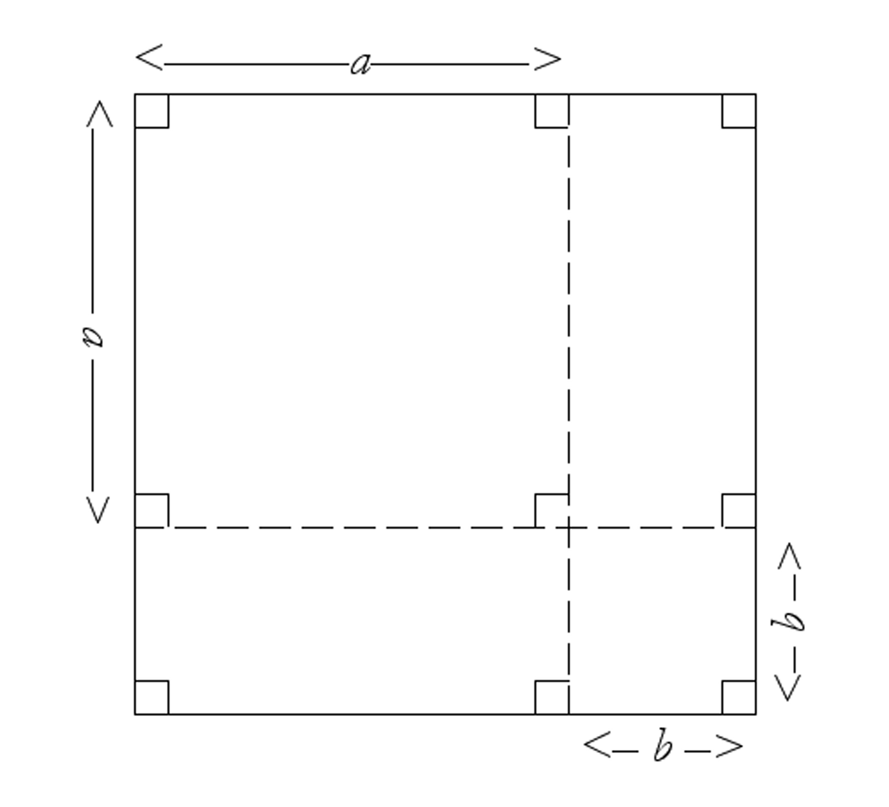

{% raw %}
<article>
<h1>lesson 3: Number Games and Algebra</h1>
  <section class="development">
    

    <h2>And Now For Something Completely Different—
    A Mindreading Textbook!</h2>

    <p>Don’t believe it? Try this!</p>

    <div class="problem">
      <p>Pick a number, any number.</p>

      <p class="problem-part">Add 4 to it.</p>

      <p class="problem-part">Square your new number.</p>

      <p class="problem-part">Subtract 16 from your answer.</p>

      <p class="problem-part">Divide what you have by the
      original number you picked.</p>

      <p class="problem-part">Finally, subtract the original
      number.</p>

      <p class="problem-part">This textbook knows what you got as
      your answer for Part e, and in fact it predicted ahead of
      time what you were going to get. Oh, you don’t believe it?
      Check out Part g.</p>

      <p class="problem-part">Why should I tell you? You think
      I’m a liar. Oh, alright, I’ll tell you, but only if you
      promise to be impressed. See part h for enlightenment.</p>

      <p class="problem-part">I’ll tell you, not that you deserve
      it. Your answer to Part e is…(drum roll please)…eight. Now
      then, kiddo, never doubt a talking textbook again.</p>
    </div>

    <h2>Development</h2>

    <p>You may have seen a trick like the one above before and
    wondered how it worked. Let’s look at a few of them and see if
    we can figure out how they “tick”.</p>

    <div class="problem">
      <p>Have a friend pick a number without telling it to you, and
      then, keeping their calculations to themselves, ask your
      friend to:</p>

      <p class="problem-part">Add 8 to it.</p>

      <p class="problem-part">Now multiply by 3.</p>

      <p class="problem-part">Subtract 11.</p>

      <p class="problem-part">Multiply by 2.</p>

      <p class="problem-part">Add 4.</p>

      <p class="problem-part">Finally, have them divide by 6 and
      tell you the answer.</p>

      <p class="problem-part">From their answer to Part f, you
      can now figure out their original number and impress the
      socks off of them. How? Try out your solution with a
      classmate and see if it works.</p>
    </div>

    <div class="problem">
      <p>Let’s figure out what happened in Problem 2 by using
      algebra. Let’s call the original number your friend was
      thinking of “$x$”.</p>

      <p class="problem-part">What number would they have after
      adding 8 to their
      original number?</p>

      <p class="problem-part">And after multiplying by 3?
      Remember to use parentheses!</p>

      <p class="problem-part">How about after subtracting 11?
      Simplify your answer.</p>

      <p class="problem-part">After multiplying by 2 and adding 4
      and simplifying, what expression do you have?</p>

      <p class="problem-part">Now divide your answer in Part d by
      6, and simplify your
      answer again. Remember that with fractions, $\frac{{a +
      b}}{c} = \frac{a}{c} + \frac{b}{c}$.</p>

      <p class="problem-part">So, given your answer in Part e,
      how can you determine your friend’s original number?</p>
    </div>

    <div class="problem">
      <p>Here’s a trickier one. Think of the age of anyone you
      know.</p>

      <p class="problem-part">Multiply it by 10.</p>

      <p class="problem-part">Add 1.</p>

      <p class="problem-part">Multiply by 2.</p>

      <p class="problem-part">Add 21.</p>

      <p class="problem-part">Multiply by 5.</p>

      <p class="problem-part">Your answer to Part e will end in
      the two digits “15”.
      Remove those last two digits to get a new number.</p>

      <p class="problem-part">Subtract 1 from the new number, and
      that is the age you were thinking of. Why?
      (Hint if you’re having trouble: What you did in Part f can
      also be thought of as a subtraction followed by a
      division—how so?)</p>
    </div>

    <div class="problem">
      <p>Here’s a more difficult variation. Pick a positive
      number.</p>

      <p class="problem-part">Three less than that number,
      multiplied by two more than that number is…</p>

      <p class="problem-part">Now take your answer from Part a
      and add the original number.</p>

      <p class="problem-part">Add 6 more.</p>

      <p class="problem-part">Take the square root. Ta da! Why
      does this work?</p>
    </div>

    <p>Figuring out Problem 5 required that you understand how to
    multiply two
    expressions together like $\left( {x - 3} \right)\left( {x + 2}
    \right)$—you use the distributive law and
    then combine “like” terms. Here, then, we get</p>

    <p>${x^2} + 2x - 3x - 6 = {x^2} - x - 6$.</p>

    <p>Recall that like terms are those that have the same power of
    x.</p>

    <div class="problem">
      <p>Take two 2-digit numbers, Betty and Crocker.</p>

      <p class="problem-part">Divide Betty by Crocker. (i.e.
      $\frac{{{\rm{Betty}}}}{{{\rm{Crocker}}}}$)</p>

      <p class="problem-part">Raise your answer to the 4th power,
      and then square the result. Call this “Vanilla”.</p>

      <p class="problem-part">Now, instead, divide Crocker by
      Betty.</p>

      <p class="problem-part">Cube what you got, and then cube it
      again. Call this
      “Chocolate”.</p>

      <p class="problem-part">Multiply “Vanilla” times
      “Chocolate”.</p>

      <p class="problem-part">Multiply your answer in Part e by
      Betty. What do you get?</p>

      <p class="problem-part">Instead, divide your answer in Part
      e by Crocker, and then take the reciprocal. Now what do you
      get?</p>

      <p class="problem-part">Explain the mystery of the
      universe’s existence, or at least Parts f and g.</p>
    </div>

    <div class="problem">
      <p>Let’s go back to Problem 1, the introductory problem.</p>

      <p class="problem-part">Calling the original number $x$,
      represent what “happens” to the number algebraically in each
      step.</p>

      <p class="problem-part">To understand why the trick works,
      we have to simplify
      the complicated expression obtained in Part a. The first two
      steps produces ${\left( {x + 4} \right)^2}$; how can this
      expression be simplified? Check with an individual value of x
      to see if your simplification is plausible. Remember,
      ${\left( {x + 4} \right)^2} = \left( {x + 4} \right)\left( {x
      + 4} \right)$.</p>

      <p class="problem-part">After the 3rd and 4th steps, you
      should have $\frac{{\left( {{x^2} + 8x} \right)}}{x}$. This
      can be simplified by factoring the numerator. Do so.</p>

      <p class="problem-part">Just as $\frac{{6 \cdot 13}}{6}$ can be simplified by realizing that $\frac{6}{6} = 1$ and
      that we can thus cancel out the 6’s, leaving just 13, the
      same is true with $x$’s and $y$’s. For example, $\frac{{y\left(
      {x - 5} \right)}}{y}$ is just $x - 5$, and $\frac{{{w^5}(x +
      w)}}{{{w^5}(x + 7)}}$ is just $\frac{{(x + w)}}{{(x + 7)}}$.
      Now further simplify your answer to Part c.</p>

      <p class="problem-part">After the next and final step, you
      should now understand the “trick”! To check your
      understanding, construct a similar problem where the first
      two steps are to subtract 5 from the number and then squaring
      the result, and the final step yields the original number.
      (No square rooting allowed!!)</p>
    </div>

    <p>Even when you are dealing with two or more variables, the
    following basic
    principles still hold and can be quite handy:</p>

    <p>Combining like terms when adding or subtracting (meaning
    terms that have the same powers of the same variables)—</p>

    <p>I. $2xy - 5xy = - 3xy$</p>

    <p>II. $7{w^2}{v^4} - 5{w^2}{v^4} = 2{w^2}{v^4}$</p>

    <p>Distributing—</p>

    <p>I. $3xy\left( {2xy - 5x{y^2} + 4{x^2}y} \right) =
    6{x^2}{y^2} - 15{x^2}{y^3} + 12{x^3}{y^2}$</p>
    

    <p>II.  \begin{split} \left( {7x + 4w} \right)\left( {5{x^2}
    - 11xw} \right) & = 35{x^3} - 77{x^2}w + 20{x^2}w - 44x{w^2}\\
      &  =35{x^3} - 57{x^2}w - 44x{w^2} \end{split}</p>
    
    <p> \begin{align*} \left( {7x + 4w} \right)\left( {5{x^2}
    - 11xw} \right) & = 35{x^3} - 77{x^2}w + 20{x^2}w - 44x{w^2} \tag{II}\\
      &  =35{x^3} - 57{x^2}w - 44x{w^2} \end{align*}</p>
    
    
    <p> <ol> <li> $3xy\left( {2xy - 5x{y^2} + 4{x^2}y} \right) =
    6{x^2}{y^2} - 15{x^2}{y^3} + 12{x^3}{y^2}$ </li> 
    
    <li> <table> <tr> 
      <td>$\left( {7x + 4w} \right)\left( {5{x^2}
      - 11xw} \right)$</td>
      <td> $= 35{x^3} - 77{x^2}w + 20{x^2}w - 44x{w^2}$ </td> 
      </tr>
      
     <tr>
       <td></td>
       <td>$=35{x^3} - 57{x^2}w - 44x{w^2}$ </td>
      </tr>
      </table></li> </ol></p>
    
    <p> \begin{lalign}
      \left( {7x + 4w} \right)\left( {5{x^2} - 11xw} \right) & = 35{x^3} - 77{x^2}w + 20{x^2}w - 44x{w^2} \tag{II}\\
      &  =35{x^3} - 57{x^2}w - 44x{w^2} \end{lalign}</p>
      
  <p>II.
    \begin{tabular}{ll}
      $\left( {7x + 4w} \right) \left( {5{x^2}
    - 11xw} \right)$ &  = 35{x^3} - 77{x^2}w + 20{x^2}w - 44x{w^2}\\

      & =35{x^3} - 57{x^2}w - 44x{w^2}\\
    \end{tabular}
    </p>
    
   <p>\begin{equation} \left( {7x + 4w} \right)\left( {5{x^2}
    - 11xw} \right) = 35{x^3} - 77{x^2}w + 20{x^2}w - 44x{w^2}\\ <br>
      =35{x^3} - 57{x^2}w - 44x{w^2}\end{equation}</p>
    
    <p>II. $\left( {7x + 4w} \right)\left( {5{x^2}
    - 11xw} \right) = 35{x^3} - 77{x^2}w + 20{x^2}w - 44x{w^2}\\ <br>
      =35{x^3} - 57{x^2}w - 44x{w^2}$</p>

    <p>Simplifying (by Recognizing “1”) when dividing—</p>

    <p>I. $\frac{{30{x^6}{y^9}}}{{15{x^6}{y^5}}} =
    \frac{{2 \cdot 15{x^6}{y^5}{y^4}}}{{15{x^6}{y^5}}}\\ =
    \frac{2}{1} \cdot \frac{{15{x^6}{y^5}}}{{15{x^6}{y^5}}} \cdot
    \frac{{{y^4}}}{1}\\ = \frac{{2{y^4}}}{1}\\ = 2{y^4}
    $</p>

    <p>Finding a Common denominator and combining/separating—</p>

    <p>I. $\frac{{x{y^2}}}{3} - \frac{{x{y^2}}}{7}
    = \frac{{7x{y^2}}}{{21}} - \frac{{3x{y^2}}}{{21}}\\ =
    \frac{{4x{y^2}}}{{21}}$</p>

    <p>II. $\frac{3}{t} + \frac{{4t}}{r} =
    \frac{{3r}}{{tr}} + \frac{{4{t^2}}}{{tr}}\\ = \frac{{3r +
    4{t^2}}}{{tr}}$</p>

    <p>III. $\frac{{6{x^3}y -
    22{x^4}{y^2}}}{{2x}} = \frac{{6{x^3}y}}{{2x}} -
    \frac{{22{x^4}{y^2}}}{{2x}}\\ = 3{x^2}y - 11{x^3}{y^2}
    $</p>

    <h2>Practice</h2>

    <div class="problem">
      <p>Ask a friend to think of any integer and add the next
      highest integer to it. Tell him to add 13 to that result, and
      then divide by 2. Finally, he subtracts the original number
      he thought of. What will his final answer be? Why?</p>
    </div>

    <div class="problem">
      <p>Have a friend select two secret numbers of their
      choosing—call them Rosencrantz and Guildenstern.</p>

      <p class="problem-part">Have them triple Rosencrantz, and
      then add 15 to their result.</p>

      <p class="problem-part">Then have them multiply
      Guildenstern by 6, and add 21
      to their answer.</p>

      <p class="problem-part">Have them compute (Answer for Part
      a) - (Answer for
      Part b).</p>

      <p class="problem-part">Tell them to divide their answer
      for Part c by 3. Let’s call this number “Hamlet”.</p>

      <p class="problem-part">Ask them to add 2 to Hamlet, then
      to subtract Rosencrantz, and finally to tell you the number
      they’ve calculated.</p>

  	  <p class="problem-part">Tell them you now know what
      Guildenstern is—because you do! Just divide the number they
      tell you in Part e by -2, and that is equal to Guildenstern.
      Why does this trick work?</p>

      <p class="problem-part">If your friend told you “Hamlet” as
      well, you could also figure out what Rosencrantz is. Why?
      Explain.</p>
    </div>

    <div class="problem">
      <p>Here’s one that involves powers. Again, pick a number.</p>

      <p class="problem-part">Double it, and then raise your
      answer to the 3rd power. Call what you get “Jack”.</p>

      <p class="problem-part">Now instead, multiply the original
      number by 6, and then square the result. Call what you get
      “Jill”.</p>

      <p class="problem-part">Compute
      $\frac{{{\rm{Jack}}}}{{{\rm{Jill}}}}$, and then multiply
      that by 4.5.</p>

      <p class="problem-part">What in the world is going on?</p>
    </div>

    <div class="problem">
      <p>Use the distributive property to help rewrite the
      expression so that it is as compact as possible, often called
      “collecting like terms”:</p>

      <p class="problem-part">$- 3(a + 4b) - 6(2b - a)$</p>

      <p class="problem-part">$\left( {2x - y} \right)\left( {x +
      3y - 7} \right)$</p>

      <p class="problem-part">$\frac{2}{5}\left( {4m - 3n}
      \right) + \frac{3}{{10}}\left( {7m + n} \right)$ s4</p>

      <p class="problem-part">${\left( {j - k} \right)^2} -
      {\left( {j + k} \right)^2}$</p>
    </div>

    <div class="problem">
      <p>Distribute and collect like terms.</p>

      <p class="problem-part">$2x( - 3{x^2} - 4) - 2({x^3} - 4x
      + 7)$</p>

      <p class="problem-part">$(4x{y^2} + 2x - 3y)(5{y^2} -
      7{x^2} + 6)$</p>

      <p class="problem-part">$\frac{{( - 6w - 4)( -
      8w)}}{2}$</p>

      <p class="problem-part">$- 12(3a - 2b) - 4\left( {7a -
      \frac{{3b}}{2}} \right)$</p>

      <p class="problem-part">$3\sqrt x (\sqrt x + 4) - 7x(x - 5)
      - 12\sqrt x $</p>

      <p class="problem-part">${\left( {2k - 3} \right)^2}$ </p>
    </div>

    <div class="problem">
      <p>Add or subtract by finding a common denominator, then
      collect like terms:</p>

      <p class="problem-part">$\frac{{7x}}{8} -
      \frac{{8x}}{7}$</p>

      <p class="problem-part">$\frac{{3x + 2}}{y} - \frac{{4y -
      6}}{x}$</p>

      <p class="problem-part">$c$. $\frac{{3{w^2} - 7u}}{{4u}} +
      \frac{{6u + 9w}}{{5w}}$</p>
    </div>

    <div class="problem">
      <p>Separate the following fractions into separate terms, then
      simplify each term:</p>

      <p class="problem-part">$\frac{{6x - 18y}}{3}$</p>

      <p class="problem-part">$b$. $\frac{{5h{g^3} -
      10{h^2}{g^5}}}{{5h{g^2}}}$</p>

      <p class="problem-part">$c$. $\frac{{8{x^2} - 12xy +
      20{y^2}}}{{ - 4xy}}$</p>

      <p class="problem-part">$d$. $\frac{{14{y^{ - 3}} -
      26{y^4}{z^{\frac{3}{2}}} + 10{z^{ -
      \frac{5}{2}}}}}{{4{y^3}{z^{\frac{1}{2}}}}}$</p>
    </div>

    <div class="problem">
      <p>Simplify each of the following by recognizing “1”:</p>

      <p class="problem-part">.
      $\frac{{30{x^7}{y^4}}}{{18{x^6}{y^4}}}$</p>

      <p class="problem-part">.
      $\frac{{48{p^{24}}{q^8}}}{{36{q^{24}}{p^8}}}$</p>

      <p class="problem-part">.
        $\frac{51x^{-6}y^3z^0}{17{x^{-7}}{y^5}z^{-2}}$
      </p>

      <p class="problem-part">$\frac{{42\sqrt z
      {y^3}{p^{\frac{5}{2}}}}}{{14{p^{\frac{1}{2}}}{y^4}\sqrt z
      }}$</p>
    </div>

    <div class="problem">
      <p>If $\frac{{x + 5}}{{x + 1}} = 1 + \frac{M}{{x + 1}}$,
      what number must $M$ be? <br>
      (Appeared on Algebra 1 Math Contest, 1995-6, #4)</p>
    </div>

    <div class="problem">
      <p>Are the following pairs of expressions always, sometimes,
      or never equal? If the answer is “sometimes”, also find all
      the values of $x$ when they are equal.</p>

      <p class="problem-part">$3 - 4x$ and $4(6 - 2x) + 7(x -
      3)$</p>

      <p class="problem-part">$2{x^2} + 6x - 36$and$2(x -
      3)\,(x + 6)$</p>

      <p class="problem-part">$2(2{x^2} - 18)\quad
      {\rm{and}}\quad \frac{{(2x - 6)(2x + 6)}}{{(x + 17)}}$</p>

      <p class="problem-part">$4 - 2x - 3(5 - 4x)$ and $- 4(3 - x) - 2(x - 3) + 7$</p>
    </div>

    <div class="problem">
      <p>For each of the following equations, say whether it is
      an identity, meaning that it is true for all values of the
      variable(s). Check by assigning numbers to the variables
      in the equation and seeing if your answer still seems
      correct!</p>

      <p class="problem-part">$\left( {x + y} \right)\left( w
      \right) = \left( {xw} \right)\left( {yw} \right)$</p>

      <p class="problem-part">${a^{ - b}} = - \left( {{a^b}}
      \right)$</p>

      <p class="problem-part">$4x + 3x = 7{x^2}$</p>

      <p class="problem-part">${b^r}{b^s} = {b^{rs}}$</p>

      <p class="problem-part">${\left( {a - b} \right)^2} = -
      2ab + {a^2} + {b^2}$</p>

      <p class="problem-part">${a^4}{b^3} = {\left( {ab}
      \right)^{12}}$</p>

      <p class="problem-part">$2 + 3x = 5x$</p>

      <p class="problem-part">${a^{ - 2b}} =
      \frac{1}{{{a^{2b}}}}$</p>

      <p class="problem-part">${j^p}{j^q} = {j^{\left( {p + q}
      \right)}}$</p>

      <p class="problem-part">$\frac{{5 + a}}{{5x}} = \frac{{1
      + a}}{x}$</p>

      <p class="problem-part">${\left( {j - k} \right)^2} &gt;
      - 2$</p>

      <p class="problem-part">$\left( {\frac{{5m - n}}{n}}
      \right) - \left( {\frac{{12n + 3m}}{{2m}}} \right) = \left(
      {\frac{{10{m^2} - 5mn - 12{n^2}}}{{2mn}}} \right)$</p>
    </div>

    <div class="problem">
      <p>If ${\left( {{4^{ - 1}} - {3^{ - 1}}} \right)^{ - 1}}$ were to be rewritten as a single number, what would it be?
      (No calculators on this one!)</p>
    </div>

    <div class="problem">
      <p>Simplify the following (and show the steps you took):</p>

      <p class="problem-part">$\frac{{54{x^8}{y^{ -
      3}}}}{{27{x^2}{y^{ - 6}}}}$</p>

      <p class="problem-part"> $\big(\frac{76x^5w^{-7}}{19w^{-4}x^8}\big)^{-4}$</p>

      <p class="problem-part">$\big(\frac{p^{-3}}{12q^{-2}}\big)^{-1}$</p>

      <p class="problem-part">$\big(\frac{120x^{-8}y^7}{y^{-2}x^{-4}w^3\cdot 15}\big)^{-2}$</p>

      <p class="problem-part">$\big(\frac{x^{3n}y^6}{y^2x^n}\big)^{-2}$</p>
    </div>
  </section>


  <section class="problems">
  <h2>Problems</h2>
    <div class="problem">
      <p>Given that $(x + 2)(x + b) = {x^2} + cx + 6$ for all
      values of $x$, what must $c$ be?<br>
        (Appeared on AHSME 1988 competition, #5)</p>
    </div>

    <div class="problem">
      <p>If $Q = 2(3\pi - 7)$, how many times bigger than Q is
      $8(12\pi - 28)$?</p>
    </div>

    <div class="problem">
      <p>A tree broke at a point $\frac{1}{4}$ the distance up the
      trunk, and when it fell the top of the tree was 60 feet from
      its base (so a triangle is formed — the upright $\frac{1}{4}$ of a tree, the diagonal rest of the tree, and the ground).
      How tall was the tree?</p>
    </div>

    <div class="problem">
      <p>If $x = {y^2}$, what is the value of ${y^{1996}} -
      {x^{998}} + 499$?<br>
        Copyright <a href="www.mathleague.com"><em>www.mathleague.com.</em></a></p>
    </div>

    <div class="problem">
      <p>$f$ is a function that squares a number, then adds 16. $g$ is
      a function that adds 4 to a number, then squares the result.
      Anthony says that $f$ and $g$ are really the same function. Is he
      right?</p>
    </div>

    <div class="problem">
      <p>Prove that the square of an even number is always even.
      Then prove that the square of an odd number is always odd.
      (Hint: Every even number is a multiple of 2; every odd number
      is one more than a multiple of 2.)</p>
    </div>

    <div class="problem">
      <p>Prove that the square of an odd number minus the square of
      another odd number is always a multiple of 4.</p>
    </div>

    <div class="problem">
      <p>Take two numbers: the first should be a multiple of 12,
      and the second 3 more than the first. Prove that the second
      number squared minus the first number squared will never be
      divisible by 6.</p>
    </div>

    <div class="problem">
      <p>If $\frac{1}{{x - 1}} - \frac{1}{{x + 1}} =
      \frac{C}{{{x^2} - 1}}$, what number must $C$ be?</p>
    </div>

    <div class="problem">
      <p>A box whose dimensions are 4 ft, 4 ft and 4 ft. is packed
      with cylindrical cans that are 2 ft high with a diameter of 6
      in. When the box is fully packed with cans, how much space is
      wasted in the box? Prove that your answer is the same as
      $16(4 - \pi )$ ft$^3$.</p>
    </div>

    <div class="problem">
      <p>If $a + b = 0$, but $a \ne 0$, what is the value of
      $\frac{{{a^{2007}}}}{{{b^{2007}}}}$? <bt>
        Of $\frac{{{a^{2008}}}}{{{b^{2008}}}}$? <br>
      
        Copyright <a href="www.mathleague.com"><em>www.mathleague.com.</em></a></p>
    </div>

    <div class="problem">
      <p>The length (in cm) of the diagonal
      connecting opposite corners of a cube is the same as the
      volume of the cube (in cm$^3$). What is the surface area of the
      cube?</p>
    </div>

    <div class="problem">
      <p>Three adjacent faces of a rectangular box have areas 20,
      30, and 40 cm$^2$. What is the exact volume of the box?</p>
    </div>

    <div class="problem">
      <p>Make up a problem like Problem 2 and try it out on your
      classmate. Make sure to prove that it works before doing
      it!</p>
    </div>

    <div class="problem">
      <p>This trick involves two numbers — your age, and the amount
      of change in your pocket (expressed in pennies — a number
      from 1 to 99).</p>

      <p class="problem-part">Double your age.</p>

      <p class="problem-part">Add 5.</p>

      <p class="problem-part">Multiply by 50.</p>

      <p class="problem-part">Add the amount of change in your
      pocket (and if you don’t have change, just think of a
      number
      between 1 and 99).</p>

      <p class="problem-part">Subtract the number of days in a
      non-leap year.</p>

      <p class="problem-part">Add 115.</p>

      <p class="problem-part">Divide by 100.</p>

      <p class="problem-part">Look to the left and to the right
      of the decimal point. Cute, no? How does this one work?</p>
    </div>

    <div class="problem">
      <p>Here’s a trick for you to finish. Take two positive
      numbers, $x$ and $y$.</p>

      <p class="problem-part">Multiply their sum by their
      difference.</p>

      <p class="problem-part">Now multiply your answer by the sum
      of their squares.</p>

      <p class="problem-part">Add $y$ raised to the 4th power.</p>

      <p class="problem-part">Take the square root of your
      result.</p>

      <p class="problem-part">How could someone always figure out
      what “$x$” was if they had the answer to Part d?</p>
    </div>

    <div class="problem">
      <p>Pick two numbers.</p>

      <p class="problem-part">Multiply the first by three more
      than the second — call it “Sonny”.</p>

      <p class="problem-part">Multiply the first by three less
      than the second — call it “Cher”.</p>

      <p class="problem-part">Subtract Cher from Sonny, and then
      divide by 6. What do you notice?</p>

      <p class="problem-part">Now add Cher to Sonny, and then
      divide by double the first number. What have you found?</p>

      <p class="problem-part">Explain the mysteries of Sonny and
      Cher. (It might help to think of the two numbers you picked
      at the start as $x$ and $y$.)</p>
    </div>

    <div class="problem">
      <p>John from Cincinnati claims that he has
      a snappy way to calculate ${37^2} - {33^2}$ in his head — just multiply the sum of
      the two numbers by their difference
      (i.e. $70 \cdot 4 = 280$).</p>

      <p class="problem-part">Does John’s method actually work?
      Try it on a few pairs of numbers.</p>

      <p class="problem-part">If two numbers that you pick are
      “$x$” and “$y$”, John’s method claims that there is an easier way
      to calculate . In terms of $x$ and $y$, what is John saying is
      the easier way?</p>

      <p class="problem-part">Prove that John’s method always
      works, or that it doesn’t always work.</p>

      <p class="problem-part">Calculate $104 \cdot 96$ in your
      head! (Hint: Work backwards!)</p>

      <p class="problem-part">Distribute $(2w - 12z)(2w + 12z)$ and $(x^3+y^7)(x^3-y^7)$; what do you notice?</p>
    </div>

    <div class="problem">
      <p>Jake made up the following number trick, which he was sure
      would dazzle all his friends. “Pick a number without telling
      me. Multiply it by 100, and subtract that from 2500. Now add
      the square of the original number, and tell me the
      answer.”
      
      Jake knew that all he had to do was call
      the final result Y, use his calculator to compute $50 - \sqrt
      Y $, and he’d have their original number back.</p>

      <p class="problem-part">Confirm that Jake’s method works
      for a few numbers. Then explain why it works.</p>

      <p class="problem-part">For a while, Jake’s trick worked
      wonderfully. But the other day, his friend Rachel said that
      Jake had failed to read her mind! Her number had been 99, but
      Jake had guessed 1. How could he have been so hideously far
      off?</p>
    </div>

    <div class="problem">
      <p>Phil from Duluth has another calculating trick. He says
      that he can calculate $33 \cdot 27$ in his head by taking the
      square of the sum of the two numbers and subtracting the
      square of their difference, and then dividing the answer by
      4: $\frac{{{{(33 + 27)}^2} - {{(33 - 27)}^2}}}{4}$. This is
      quicker, Phil points out, because the numbers are easier—</p>
      
      $\frac{60^2-6^2}{4} = \frac{60^2}{4} - \frac{6^2}{4} = 900 - 9$


    <p class="Problems---Problem-flow">is a lot easier to calculate
    in one’s head than $33 \cdot 27$.</p>

    <p class="problem-part">Is Phil correct that this method
    always gives the right answer? Will this always work with any
    two
    numbers? Prove your answer.</p>

    <p class="problem-part">Is Phil correct that this method is
    always quicker? Give some examples to back up your
    position.</p>
    </div>
    
    <div class="problem">
      <p>A terminating decimal is a decimal like .3764, which ends.
      A repeating decimal is one that repeats forever, like
      .862862862... .</p>

      <p class="problem-part">How can one express any terminating
      decimal as a fraction? Show that you can do so with .3674 and
      .1864597.</p>

      <p class="problem-part">It isn’t obvious whether repeating
      decimals can be expressed as fractions or not. Still, if
      .862862862... were to be equal to a fraction, it would have
      to be close to $\frac{{862}}{{1000}}$.
      See if you can find a fraction which appears to do
      better.</p>

      <p class="problem-part">Will the idea of part b work with
      any repeating decimal? Try it out on .9166591665... and
      .333... .</p>

      <p class="problem-part">Let x =.333... By multiplying both
      sides of this equation by 10, one
      gets a new equation. By combining equations, prove why .333...
      = $\frac{1}{3}$.</p>

      <p class="problem-part">Now prove that .862862862... is a
      fraction as well by a similar method to part d. Will this
      method let you convert any repeating decimal into a fraction?
      Does it work on .9166591665..., for example?</p>
    </div>

    <div class="problem">
      <p>Don’t use a calculator for this problem.</p>

      <p class="problem-part">Factor $x^2-x+12$.</p>

      <p class="problem-part">Solve ${x^2} + 4x + 2 = 0$ by
      completing the square.</p>

      <p class="problem-part">Divide $5.\bar 3 \div 8$.</p>

      <p class="problem-part">Simplify $\sqrt{50a^4b^3}$.</p>

      <p class="problem-part">If $(x - 2)(x + 2) = 5$, find
      ${x^4} - 4{x^2}$.</p>
    </div>

    <div class="problem">
      <p>Ask a friend to think of a three-digit number in which the
      digits are all the same (such as 777). Tell them that you
      don’t want to know the number, but that you would like them
      to add up the digits, multiply by 37 and tell you the answer.
      Why would they think you are being a wiseacre? Can you prove
      it always “works”?
      (Hint: $777 = 700 + 70 + 7 = 7\left( {100 + 10 + 1} \right)$.)</p>
    </div>

    <div class="problem">
      <p>If I have a larger number divisible by 3 and subtract a
      smaller number divisible by 3, will the answer necessarily be
      divisible by 3? Try some examples. Explain why what you have
      found makes sense.</p>
    </div>

    <div class="problem">
      <p>If I have a larger number and subtract a smaller number
      divisible by 3 and get an answer that is divisible by 3 — is
      the larger number necessarily divisible by 3? Again, try some
      examples, and explain why your conclusions are justified.</p>
    </div>

    <div class="problem">
      <p>After having completed and digested the ideas of Problems
      44 and 45, we are now ready to understand why the
      divisibility test for 3 works. Remember that the divisibility
      test for 3 states that if the sum of the digits of a number
      is divisible by 3, then the number itself is as well. (You
      will prove below that it works for a three digit number, but
      your proof can be adapted easily to any number of
      digits.)</p>

      <p class="problem-part">We can write 741 in the
      following
      way: $700 + 40 + 1$, and
      similarly we can write 6518 as $6000 + 500 + 10 + 8$. How
      could you write any number “ABC” in the same way, where A is
      the hundreds digit, B is the tens digit, and C is the units
      digit?</p>

      <p class="problem-part">Consider 568, which is not
      divisible by 3. Notice that when you subtract the sum of its
      digits (5 + 6 + 8 =19) from itself, the answer you get, 549,
      is divisible by 3. Does this always work for any 3-digit
      number?</p>

      <p class="problem-part">Use algebra to prove the result you
      found in part b. Your answer to part a. will be helpful
      here.</p>

      <p class="problem-part">If $\left( {{\rm{A + B + C}}}
      \right)$ is also divisible by 3, by using what you learned in
      Problem 45 and parts b and c above, what can you now say
      about the number “ABC"? Explain!</p>

      <p class="problem-part">If $\left( {{\rm{A + B + C}}}
      \right)$ is not divisible by 3, what, if anything, can we say
      now about “ABC”? Explain carefully.</p>
    </div>

    <div class="problem">
      <p>Pick a 3-digit number. If one subtracts the “reverse” of
      the number from the number itself, the answer is always a
      multiple of 9. For example $852 - 258 = 594$, which is a
      multiple of 9 (and negative numbers “work” as well — e.g. If
      we had picked 258, ). Explain why this is so. (Remember that
      any three digit number “ABC” can be written as $100{\rm{A}} +
      10{\rm{B}} + {\rm{C}}$ ; how do you think you could write
      its reverse, “CBA”?)
      
      Will this work for 4 or 5 digit numbers as well?</p>
    </div>

    <div class="problem">
      <p>Go to the following web page and have fun!:
        <a href="http://digicc.com/fido/">http://digicc.com/fido/</a>
      
      What is going on here? Can you come up with an explanation of
      how it is done?</p>
    </div>

    <div class="problem">
      <p>Look at the following YouTube video on the method of
      “Vedic Multiplication”:
      
      
<a href="https://www.youtube.com/watch?v=gwaAAEYIW_8">www.youtube.com/watch?v=gwaAAEYIW_8</a>

      Why does this method work? Will it always work?</p>
    </div>

    <div class="problem">
      <p>Explain what the following “Proof without Words” is
      equivalent to algebraically:</p>

    <figure>
      
    </figure>
    </div>

    <div class="problem">
      <p>Explain what the following (slightly harder) “Proof
      without Words” is equivalent to algebraically:</p>

    <figure>
      
    </figure>
    </div>

    <h2>Exploring in Depth</h2>
    
    <div class="problem">
      <p>Is the sum of 3 consecutive integers
      always divisible by 3? Is the sum of 4 consecutive integers
      always divisible by 4? Is the sum of 5 consecutive integers
      always divisible by 5?</p>
    </div>

    <div class="problem">
      <p>When is the sum of $n$ consecutive integers divisible by $n$?
      Try different values of $n$ to get a feel for the problem, and
      then see if you can give good reasons for the pattern you
      see.</p>
    </div>

    <div class="problem">
      <p>Prove that the square of an odd number is always one more
      than a multiple of 8. (Hint: Try factoring part of the
      expression you came up with to represent the square of an odd
      number, and also note that with any two successive integers,
      one of them must be odd and one of them must be even.)</p>
    </div>

    <div class="problem">
      <p>Which primes can be expressed as the
      difference of two squares? Why? Can any be written as the
      difference of two squares in two different ways? Why or why
      not?</p>
    </div>

    <div class="problem">
      <p>Here’s a quick way of multiplying any two 2-digit numbers,
      like 52 and 58, that have the same tens digit and have units
      digits that add up to 10.
      
      i) Multiply the tens digit by the next largest integer and
      call it “$M$” (here, $M = 5 \cdot 6 = 30$) .
      ii) Multiply the units digits of the two numbers together and
      call it “$N$”
      (here, $N = 2 \cdot 8 = 16$).
      iii) Write the digits of $M$ followed immediately by the digits
      of $N$ (here, 3016). This gives you the right answer!
      
      Why does this work?</p>
    </div>
    
    <div class="problem">
      <p>Four whole numbers, when added three at a time, give the
      following sums: 180, 197, 212, and 220. Find the four
      numbers.</p>
    </div>
  </section>

</article>

{% endraw %}
